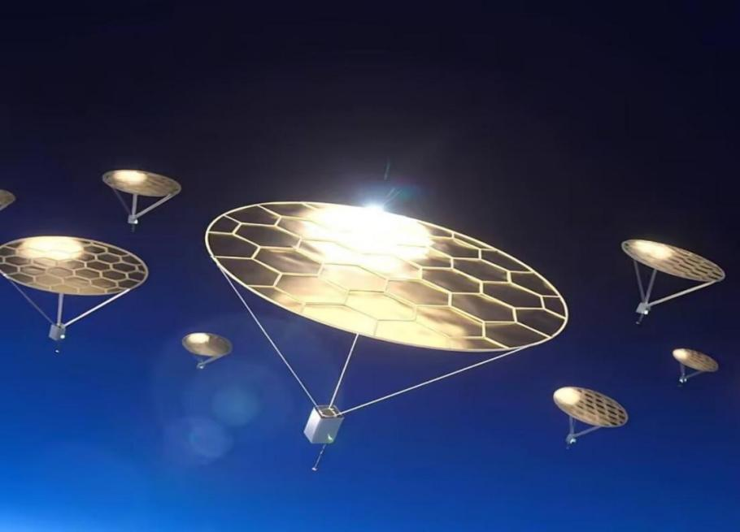

Photophoresis Effect Virtual Simulation Platform
全国大学生物理实验竞赛（创新）作品 · 3D交互可视化 · 虚拟实验操作

2025年8月，《自然》杂志报道哈佛大学研究者利用阳光直接加热空气，将直径1厘米的圆盘送上75公里高空，无需电池、火箭或推进器。
光泳效应（Photophoresis）指悬浮在气体中的微粒在光照下受到的净推力。19世纪末Clausius和Güntt发现该现象，但微观机制至今仍在研究中。
设计了一套低成本、高灵敏度的光泳力测量装置，可将光泳效应引入本科教学实验，开展设计性实验和科技创新活动。
选择原理模块，观察3D仿真动画理解物理机制
光由光子组成，每个光子具有动量 p = h/λ。当光子撞击物体表面时，根据动量守恒定律，光子动量的变化必然传递给物体一个反冲力。
吸收（石墨侧）
光子被吸收，动量全部传递给薄板
反射（铝箔侧）
光子反弹，动量变化为2倍
P: 光功率 | ρ: 反射率 | α: 吸收率 | c: 光速
光照让石墨面（上）温度升高，气体分子从热面反弹时获得更多动能（红色快分子），从冷面（铝箔，下）反弹时动能较小（蓝色慢分子）。两侧分子碰撞的动量差，产生了宏观上的净推力——这就是光泳力，方向向上。
铝箔反射光产生的光压力是石墨吸收光的2倍。将铝箔侧光强调为石墨侧的1/2时，两侧光压力恰好抵消（铝箔侧：2×0.5=1，石墨侧：1×1=1），传感器只测量到纯净的光泳力（向上）。
F = P(2ρ + α) / (c·cos²θ)
P为光功率，ρ为反射率，α为吸收率，θ为入射角
光压力正比于光功率，反比于光速。反射面受力是吸收面的2倍。
F_pp = K · ΔT · (dλ/dT)
K为几何因子，ΔT为温差，dλ/dT为平均自由程温度系数
光泳力正比于温差和压强梯度。在低气压区接近线性，高气压区受饱和效应影响。
F_pp = F_light → P_c ≈ 0.021 MPa
光泳力与光压力相等时的压强，即临界压强
在临界压强以上，光压力主导；以下，光泳力主导。传感器读数在临界点附近趋近于零。
利用太阳光直接产生推力，无需携带燃料，可用于卫星姿态控制和低成本太空探测器。
光泳力可用于操控纳米颗粒、生物细胞等微尺度物体，在生物医学和材料科学中有重要应用。
光泳效应影响气溶胶在大气中的运动和分布，对气候模型和空气质量研究有重要意义。
本实验将前沿研究引入本科教学，帮助学生理解光与物质相互作用的微观机制。
模拟真实实验流程，操作虚拟仪器，记录实验数据
基于真实实验数据的可视化分析
非线性递增，高真空区域接近线性
近似线性，R²=0.9679
指数增长趋稳，R²=0.997
光泳力=光压力，临界压强0.018~0.024 MPa
拖动/缩放查看物理量之间的关联关系 · 节点大小表示影响力大小
从光子到光泳力的完整因果链条
国内外大学教材和科普读物中缺少光泳效应的系统讲解，本实验将前沿研究引入本科教学。
利用"深色吸收-浅色反射"双薄片对称结构，通过偏振片将浅色侧光强调至深色侧的1/2，实现光压力抵消。
光泳力和光压力在物理本质上是完全不同的两种效应，本装置在同一传感器、同一真空腔上同时观测两者。
本作品成功设计并搭建了一套低成本、高灵敏度的光泳力测量装置，可探究光泳力随气压、光功率等因素的变化规律。通过虚拟仿真平台，学生可以在浏览器中交互式地理解光泳效应的微观机制和宏观实验过程。
该仪器可面向物理及相关专业学生，开展设计性实验、教学研究、科技创新活动，为将光泳效应推入大学物理实验教学开拓了道路。